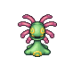
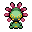

Pokédex / #346

Cradily #346
RockGrass
It lives in the shallows of warm seas. When the tide goes out, it digs up prey from beaches.
Generation 3 · Hoenn

Stats
| Attack | 41 | |
|---|---|---|
| Defense | 77 | |
| Sp. Atk | 61 | |
| Sp. Def | 87 |
In the wild
| Wild level | 40–50 |
|---|---|
| HP | 86 |
| Experience | 10 |
| Egg groups | Water 3 |
Evolution
- Evolves from Lileep at level 30.
Moves
| Level | Move | Type | Category | Power | Energy | Cooldown | Effect | |
|---|---|---|---|---|---|---|---|---|
| 1 | Tackle | Normal | Physical | 15 | 15 | 1s | Tackle is one of the most common and basic moves a Pokemon learns. It deals damage with no additional effects. | |
| 5 | Acid | Poison | Special | 40 | 40 | 6s | Acid deals damage and has a 10% chance of lowering the target's Special Defense by one stage. | |
| 10 | Energy Ball | Grass | Special | 90 | 95 | 15s | Energy Ball deals damage and has a 10% chance of lowering the target's Special Defense by one stage. | |
| 15 | Wring Out | Normal | Special | 120 | 90 | 18s | The power of Wring Out varies between 1 and 120 depending on how much HP the opponent has. The more HP the opponent has, the more damage this move will do. Its damage is calculated by the following formula: Base Power = 120 x (Opponent's Current HP/Opponent's Maximum HP) | |
| 20 | Brine | Water | Special | 65 | 80 | 15s | Brine inflicts damage, and its power doubles to 130 when the target is at or below 50% health. | |
| 25 | Ingrain | Grass | Status | – | 100 | 120s | The user lays roots that restore its HP on every turn. | |
| 35 | Ancient Power | Rock | Special | 60 | 70 | 14s | Ancient Power inflicts damage and has a 10% chance of raising all of the user's stats by one stage. | |
| 40 | Giga Drain | Grass | Special | 75 | 95 | 12s | Giga Drain deals damage and the user will recover 50% of the HP drained. | |
| 45 | Earthquake | Ground | Physical | 50 | 110 | 23s | Earthquake deals damage. | |
| 50 | Gastro Acid | Poison | Status | – | 120 | 90s | The user hurls up its stomach acids on the target. The fluid eliminates the effect of the target's Ability. | |
| 55 | Stockpile | Normal | Status | – | 90 | 10s | Raises the user's Defense and Special Defense by one stage and charges up power for use with companion moves Spit Up or Swallow. | |
| 55 | Spit Up | Normal | Special | 100 | 150 | 30s | Spit Up deals varying damage depending on how many times the user used Stockpile. The base power is 100, 200 or 300 if the user stockpiled one, two or three times respectively. | |
| 65 | Stone Edge | Rock | Physical | 100 | 100 | 15s | Stone Edge deals damage and has an increased critical hit ratio. |
Field abilities
StrengthRock Smash
Special abilities
Suction Cups
Egg moves
BarrierCurseEndureMega DrainMirror CoatStealth RockWring Out
Technical machines
Bullet SeedDouble TeamEarthquakeEnergy BallHyper BeamProtectRestRock SlideRock TombSandstormSludge BombSolar BeamSubstituteSwords DanceToxic
Drops
| Item | Amount | Chance | |
|---|---|---|---|
| seed | 1–4 | 72.9% | |
| frostbite herb | 1 | 43.8% | |
| leaf pendant | 1 | 21.9% | |
| sandbag | 1 | 18.2% | |
| leaf | 1 | 12.2% | |
| cure herb | 1 | 10.9% | |
| thorn seed | 1 | 10.9% | |
| stone orb | 1 | 8.75% | |
| sharp razor | 1 | 8.75% | |
| shadow rock | 1 | 7.81% | |
| night orb | 1 | 7.29% | |
| battle stone | 1 | 7.29% | |
| heavy stone | 1 | 4.38% | |
| rare sandbag | 1 | 3.12% | |
| clay lump | 1 | 3.12% | |
| lion's mane flower | 1 | 1.09% | |
 | cradily doll | 1 | 0.1% |
| Stone Plate | 1 | 0.05% | |
| Meadow Plate | 1 | 0.05% | |
| held hard stone | 1 | 0.01% | |
| held miracle seed | 1 | 0.01% | |
| TM 56 | 1 | 0.01% |